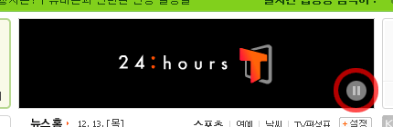

점검 방법 및 준수/위반 사례
이전
목차
다음
익스플로러 (브라우저) 화면 확인
2-3. 깜빡거리는 객체 사용 제한
점검 가능 지표
깜빡이는 콘텐츠를 사용할 경우, 이에 대한 경고 및 제어방안을 제공하여야 한다.
점검 방법 설명
초당 3~49초의 깜빡임이 포함된 콘텐츠가 있는지 확인.
깜빡임이 있을 경우 사전 경고, 멈춤 기능, 대체 페이지 링크 제공 여부 확인>
※ 객관적 평가가 곤란한 경우가 있다.
X 나쁜 예
깜박임이 빠르다
O 좋은 예
깜박임이 느리다
